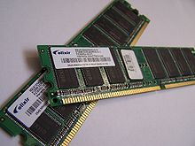

2.11.1. Общие сведения об оперативной памяти
Оперативная память (англ. Random Access Memory, RAM – память с произвольным доступом) — энергозависимая часть системы компьютерной памяти, в которой временно хранятся данные и команды, необходимые процессору для выполнения им операции. Обязательным условием является адресуемость (каждое машинное слово имеет индивидуальный адрес) памяти. Передача данных в оперативную память центральным процессором (ЦП) производится непосредственно, либо через сверхбыструю память (рис. 26.1). Содержащиеся в оперативной памяти данные доступны только тогда, когда компьютер включен. При выключении компьютера содержимое стирается из оперативной памяти, поэтому перед выключением компьютера все данные нужно сохранить. Так же от объема оперативной памяти зависит количество задач, которые одновременно может выполнять компьютер.
Оперативное запоминающее устройство, ОЗУ — техническое устройство, реализующее функции оперативной памяти. ОЗУ может изготавливаться как отдельный блок или входить в конструкцию, например однокристальной ЭВМ или микроконтроллера.
Рис. 26.1. Простейшая схема взаимодействия оперативной памяти с процессором.
ОЗУ большинства современных компьютеров представляет собой модули динамической памяти, содержащие полупроводниковые БИС ЗУ, организованные по принципу устройств с произвольным доступом. Память динамического типа дешевле, чем статического, и её плотность выше, что позволяет на том же пространстве кремниевой подложки размещать больше ячеек памяти, но при этом её быстродействие ниже. Статическая, наоборот, более быстрая память, но она и дороже. В связи с этим массовую оперативную память строят на модулях динамической памяти, а память статического типа используется для построения кеш-памяти внутри микропроцессора.
В микросхемах ОЗУ присутствуют две операции: операция записи и операция чтения. Для записи и чтения информации можно использовать различные шины данных (как это делается в сигнальных процессорах), но чаще используется одна и та же шина данных (рис. 26.1). Это позволяет экономить внешние выводы микросхем, подключаемых к этой шине и легко осуществлять коммутацию сигналов между различными устройствами.
В данной лекции мы рассмотрим основные виды оперативной памяти, применяемой в компьютерах. Под ними будем подразумевать память класса SRAM (Static Random Access Memory) – память статического типа, SDRAM (Synchronous Dynamic Random Access Memory) – синхронная динамическая память с произвольным доступом и одинарной скоростью передачи данных, DDR (Double Data Rate) – память с удвоенной скоростью передачи данных, DDR2 (память DDR второго поколения) и DDR3 (память DDR третьего поколения).